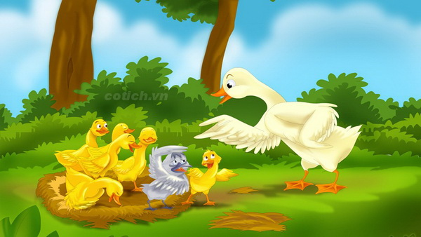
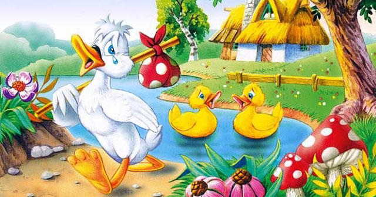
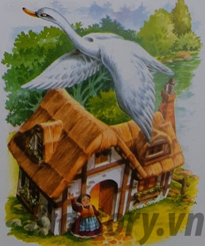

Vịt mẹ rất tự hào về đàn con của mình.
Mỗi sáng nó dẫn đàn con ra đầm dạy chúng tập lặn, tập kiếm mồi và tự bảo vệ mình trước các loài ăn thịt khác, tóm lại là học cách sống như những con Vịt thực thụ. Nó đã ấp năm quả trứng, ngày đêm chăm sóc và bây giờ nó được nhìn đàn con lớn lên hàng ngày cạnh mình.
Tuy nhiên nó cũng rất buồn khi nhìn thấy một con trong số chúng. Nó không thực sự giống như những con Vịt khác. Nó lớn hơn, ăn nhiều hơn và đi lại chậm chạp, tóm lại là nó rất xấu. Một tháng sau, con Vịt con xấu xí hiểu rằng mình đang làm phiền người khác và bản thân nên cố gắng tự xoay xở lấy, mẹ của nó đã đuổi nó ra khỏi đàn. Trong khu rừng gần đó nó gặp được rất nhiều loài chim, chúng dạy cho nó biết cách trốn những tay thợ săn, tự bảo vệ mình trước những khẩu súng săn. Cuộc sống thật nặng nề với những loài sống bên bờ ao và Vịt con xấu xí đã hiểu tại sao một vài loài như vịt trời và cò lại thích bay đi tìm những vùng có khí hậu ấm áp hơn. Mùa Đông đã đến, mặt ao đóng băng, trên mặt đất thì tuyết phủ, kiếm mồi lúc này thật khó khăn.
Thất vọng, con Vịt con xấu xí rời bờ ao và đi, đi mãi… Cuối cùng nó cũng đến được trước một ngôi nhà nhỏ, nó kiệt sức nằm trên bậc cửa và ngủ thiếp đi. Khi tỉnh giấc nó thấy mình nằm cạnh ngọn lửa ấm áp, trên một chiếc đệm và có một mâm ngũ cốc ở bên cạnh. Nó được bà lão. sống trong ngôi nhà đón vào nhà. Mùa Xuân đến, nó quay lại bờ ao. Cúi xuống uống nước, nó nhìn thấy một con chim rất đẹp màu trắng dưới mặt nước. Nó đã trở thành một con Thiên Nga trắng lộng lẫy, chính là nó, chú Vịt con xấu xí ngày nào.
